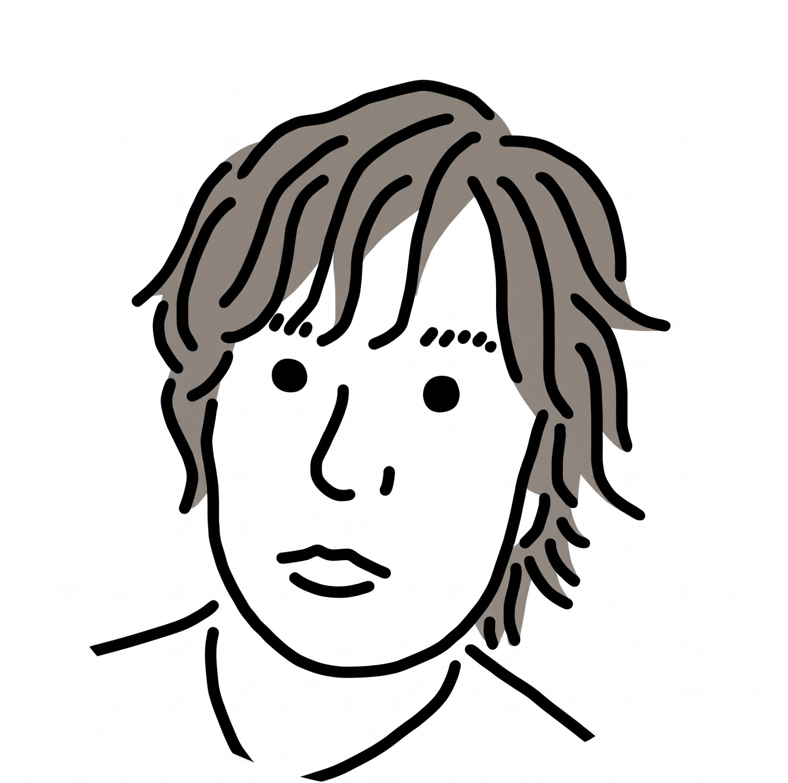

著書紹介・実績


講演・講義およびメディア掲載実績
「本」を武器に、全国の現場で「言葉」を届けてきた実績があります。
私自身、自らの著書を出版し、その内容を軸に全国の自治体シンポジウムや大学講義で10年以上にわたり登壇を続けてきました。
メディア掲載
- 日本経済新聞 朝刊1面掲載
主な講演・登壇実績
- 長野県主催「若者タウンミーティング」全体ファシリテーター
- 新潟新聞主催「地方創生の今」シンポジウムパネリスト
- 福岡県商工会議所向け講演
教育機関・講義実績
- 信州大学：「キャリア論」にて約10年間継続登壇
- 福岡大学：「地域論」等、複数の講義に登壇
著者プロフィール

漢道（おとこみち）
福岡県生まれ。神奈川県の湘南エリア在住。40代の元中卒の会社員。 中学校入学直後から不登校となり、13歳で社会から「終了宣告」を受ける。 深夜2時の新聞配達に3年間無欠勤で従事し、 独自の「自律」と「仕事観」を形成。
その後、大検を経て大学へ進学。株式会社リクルート入社、 町役場出向、地方公務員を経て、単身ミャンマーへ移住。 広告代理店に勤務しつつ映画俳優にも挑戦する異色のキャリアを歩む。 しかし、インドでの修行中にパンデミックと軍事クーデターに巻き込まれ帰国。
帰国後、30代後半のニート生活から一転、 外資系ベンチャーの立ち上げに参画。 その後、テックジャイアント（GAFAM）での勤務を経て、 現在は大手日系企業にてビジネスデザインに従事。 信州大学で10年近く継続しているキャリア講義をはじめ、 自治体や大学等での講演実績も多数。
「人生はいつからでも、何度でも、 後付けで正解にできる」をモットーに、 自身の波乱万丈な経験を「ハック思考」で言語化し、 発信している。